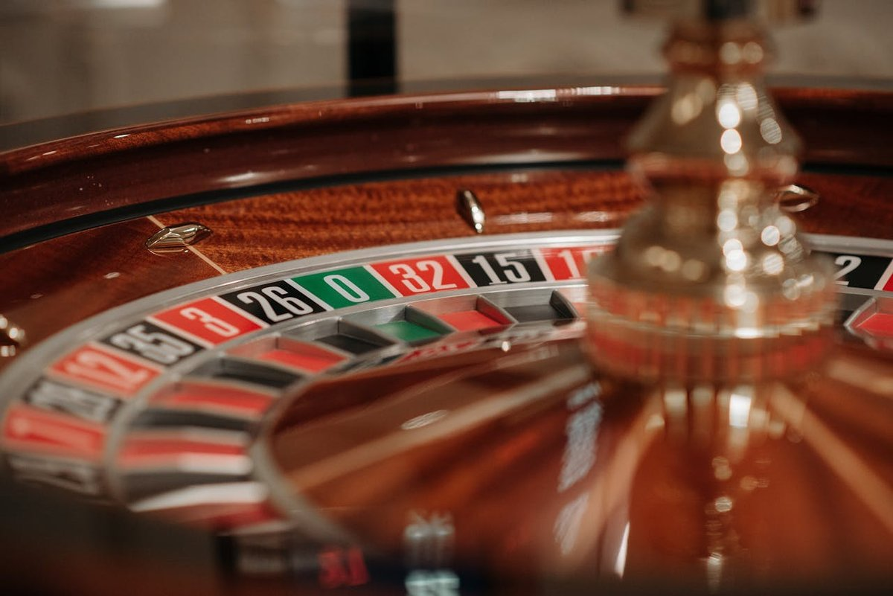
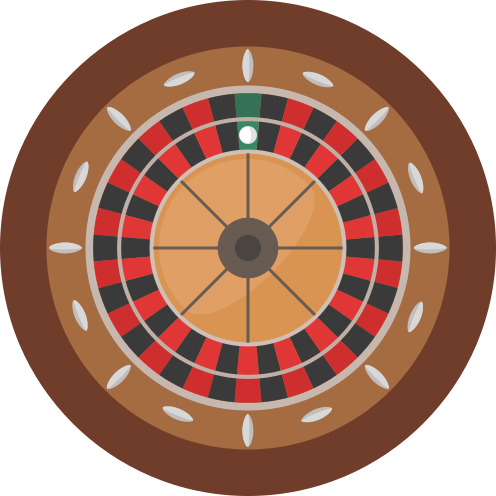

認知バイアス / 確率論
ルーレットに記憶はない。それでも脳は、次こそ赤が「来るはずだ」と叫ぶ。1913年8月18日、モンテカルロで起きたこと。そして今日も、同じ誤りは私たちの頭の中で動き続けている。
モンテカルロカジノで黒が26連続出現。ギャンブラーたちが「次こそ赤」と賭け続け破産。後に「モンテカルロの誤謬」と呼ばれる。
8月10日、第二次バルカン戦争がブカレスト条約で終結。ヨーロッパは翌年に迫る大戦の足音のなかにいた。
独立試行の誤解は、カジノだけの問題ではない。亡命審査の判事、野球の主審、銀行のローン審査員——現代のデータはどこにでも、同じ歪みの指紋を残している。
赤、赤、赤、赤、赤。あなたがコインを5回投げて、5回とも表が出たとする。6回目を投げる前、指先にかすかな確信がよぎる——さすがに今度は裏だろう。
理屈では、表と裏の確率はずっと半分ずつだと知っている。それでも「バランスが取れるはずだ」という感覚のほうが強い。ギャンブルをしない人でも、宝くじで最近出ていない番号を選ぶとき、連続で女の子が生まれた家の三人目を予想するとき、同じ種類の確信が働く。
この確信には名前がある。そして、その名前の由来になった夜がある。
独立試行の世界では、過去は未来に何の情報も渡さない。それでも脳は、短い系列が「そろそろ均されるはず」と叫ぶ。その叫びは1913年のモンテカルロから今日の裁判所まで、形を変えずに響き続けている。
1913年8月18日、モナコ公国。地中海から吹き上がる夏の風が、モンテカルロカジノの高い窓を揺らしていた。ヨーロッパはまだ穏やかな顔をしていた——表向きは。その8日前、8月10日にブカレスト条約ブカレスト条約(1913)第二次バルカン戦争の講和条約。1913年8月10日に締結され、セルビア・ギリシャ・ルーマニア・モンテネグロがブルガリアから領土を獲得した。バルカン半島の勢力図を大きく塗り替え、翌年の第一次世界大戦への伏線となった。が結ばれ、第二次バルカン戦争第二次バルカン戦争1913年6月〜8月、第一次バルカン戦争で獲得した領土の配分をめぐってブルガリアがセルビア・ギリシャを攻撃して始まった戦争。わずか1ヶ月余りでブルガリアが敗北し、ブカレスト条約で終結した。は終わったばかり。オスマン帝国オスマン帝国14世紀から20世紀初頭まで続いたイスラム国家。最盛期にはバルカン半島全域を支配していたが、バルカン戦争によってヨーロッパでの領土をほぼ失い、1922年に滅亡。がヨーロッパから退き、セルビアとギリシャが領土を広げ、オーストリア=ハンガリーはスラブ民族主義スラブ民族主義(汎スラヴ主義)スラヴ系諸民族の統一・連帯を目指す政治思想。オーストリア=ハンガリー領内のスラヴ系住民の独立運動を刺激し、セルビアの台頭と結びついて第一次世界大戦の引き金となった。の高まりに神経質になっていた。翌年6月にサラエボで銃声が響くサラエボ事件(1914)1914年6月28日、ボスニアのサラエボでオーストリア=ハンガリー帝位継承者フランツ・フェルディナント大公夫妻がセルビア人青年ガヴリロ・プリンツィプによって暗殺された事件。第一次世界大戦の直接の引き金となった。ことを、この夜の誰一人知らない。

カジノの中央、緑のフェルトの上でルーレットが回っていた。赤と黒。18と18。そして1つの緑のゼロ。球が最初に黒に落ちたとき、誰も気に留めなかった。2回目、3回目。4回続いたあたりで、近くの客が顔を上げた。6回、7回、8回——ディーラーの手つきが速くなり、周囲のテーブルから人が集まり始めた。10回連続で黒。
ここから先は、部屋全体が一つの物語に取り憑かれる。客たちは一斉に赤に賭け始めた。「次こそ赤が来る」「ここまで黒が続いたのだから」「バランスが取れるはずだ」。チップが積まれ、紙幣が重ねられ、額はどんどん膨らんだ。しかし球は黒に落ちた。そしてまた黒。また黒。20回目の黒が出た頃には、テーブルの周りは人垣になっていた。多くの客が「今こそ」と全財産を赤に押し出した。球は黒に落ちた。結局、黒は26回連続で出た。27回目にようやく赤が出たときには、総額で数百万フラン——現在の貨幣価値に換算して十数億円規模——が、カジノの金庫に吸い込まれていた。
1913年8月の時代文脈。事件の8日前に第二次バルカン戦争が終結。翌年のサラエボ事件までの「束の間の静寂」の中で起きた。
この夜の記録が、確率論の教科書に「モンテカルロの誤謬(Monte Carlo fallacy)」という名前を刻んだ。だが、事件そのものは珍しいわけではない。同じ種類の誤りは、それ以前もそれ以後も、人類が確率と付き合ってきた全期間を通じて、形を変えずに繰り返されている。珍しかったのは、26連続黒という事象のほうだ。確率でいえば、およそ6,660万分の1。しかし、珍しい出来事はそれでも起きる。ルーレットはその事実を淡々と示しただけだった。
Amos Tversky & Daniel Kahneman
エイモス・トベルスキー / ダニエル・カーネマン
イスラエル出身の心理学者コンビ。1971年の論文「小数の法則への信念」で、統計の専門家ですら短い系列から過剰な結論を引き出す傾向があることを実証した。ギャンブラーの誤謬を「代表性ヒューリスティック代表性ヒューリスティックある事象が「典型例」にどれだけ似ているかで確率を判断する思考のショートカット。連続で黒が出た後は、赤を含めたほうが「ランダムらしく見える」から、次は赤だと感じてしまう。」という認知の仕組みの帰結として位置づけた。この研究は行動経済学という分野を立ち上げる礎のひとつとなり、2002年にカーネマンはノーベル経済学賞を受賞する(トベルスキーは1996年に他界していたため受賞できなかった)。
トベルスキーとカーネマンの洞察は、モンテカルロの夜に立ち会った客たちが「愚か」だったのではない、ということだった。数学者でも、統計学者でも、同じ状況に置かれれば似た方向に指が動く。私たちが「ランダム」と呼んでいるものの心像そのものが、数学的なランダムとずれている——問題はそこにある。
本当のランダム(左)はかたまりを含む。脳が想像するランダム(右)は「交互」に近い。この非対称が誤謬の根にある。
スライダーで「黒が連続した回数」を動かしてみてほしい。赤線(ルーレットの実際の確率)は決して変わらない。点線(脳が期待するカーブ)は連続数に応じて上がっていく。この2本のズレの大きさが、モンテカルロの夜に二十六人が見ていたものだ。
※点線は特定の関数に基づくものではなく、研究(Tversky & Kahneman 1971, Clotfelter & Cook 1993 ほか)で示された「連続が長いほど反対側への主観確率が上がる」という定性的傾向を概念的に図示したもの。
実際の数字は動かない。ルーレットには記憶がない。独立試行独立試行一回ごとの結果が、前の結果から一切の情報を受け取らない試行。ルーレット、コイン投げ、サイコロ、宝くじ抽選などがこれにあたる。過去の履歴は未来の確率に影響しない。とはそういう意味だ。しかし脳は、連続が長くなるほど「さすがに」という感覚を強めていく。この「さすがに」が、モンテカルロの夜の客たちの財布から、ゆっくりと、しかし確実に資産を吸い出していった。
よくある誤解
黒が長く続いたのだから、次は赤が出やすくなっているはずだ。長期的には半々に戻るのだから、それが「戻る」方向に確率が傾く。
実際は
次のスピンの確率は、過去に何が起きていようと常に同じ(仏式ルーレットで約48.6%)。長期的に半々に近づくのは、過去の偏りが「打ち消される」からではなく、試行数が増えて偏りが全体に埋もれるから。
よくある誤解
26回連続で黒が出るなんて、そんな異常な事象は普段は起こらない。ギャンブラーたちも普通なら赤に賭けて正解だったはずだ。
実際は
モンテカルロ事件は「起きたから有名になった」だけで、赤の連続でも起き得た。そして6,660万分の1の事象でも、世界中で毎晩ルーレットが回り続ければ、どこかで必ず起きる。問題は連続そのものではなく、それを見た脳の反応。
よくある誤解
ギャンブラーの誤謬はカジノでしか起きない。私は賭博をしないから無関係。
実際は
同じ構造の誤りは、宝くじの番号選び、出生順の予想、亡命審査、野球の主審、ローン審査員の判断など、あらゆる「独立した出来事が連続する場面」で観察されている(Chen, Moskowitz & Shue, 2016)。カジノは氷山の一角にすぎない。
ここで、あなたをその夜のテーブルに連れて行く。最初から断っておく: これから体験する最初のモードは「1913年8月18日の追体験モード」だ。26連続黒は歴史の記録通りに固定され、結果は既に決まっている。だから試されているのは「次の色を当てられるか」ではない。試されているのは、あなたの指が、いつ、どの色に、いくらで動くか——それだけだ。そのあと、真のランダムで動く「本物のルーレットモード」も試せる。自分の誤謬を、自分のデータで測れる。

多くの人は、10回目くらいまで見送り、12回目あたりから赤に賭け始める。15回目を超えると確信が強まり、ベット額を一段階上げる。20回目でさらに上げる。そして、26回目までの間にすでに破綻している。シミュレーターの中で痛みを感じた人は、1913年の夜にそこに居合わせた自分を想像できるはずだ。この感覚こそが、現代の脳にも同じ形で刻まれているものだ。
ギャンブラーの誤謬は3つの層からなる、積み重なった誤読だ。下の3ステップを順に開いていくと、モンテカルロの夜の二十六人の頭の中で何が起きていたかが見えてくる。
コインを無限回投げれば、表と裏の比率は 0.5 に収束する——これは数学的事実で、大数の法則と呼ばれる。脳はこの事実を、短い系列にも当てはめようとする。「10回中6回が表だったなら、次の10回は表が少なめに出るべきだ」と。
しかし大数の法則はそんなことを言っていない。長期的な収束は、偏りが打ち消されることで起きるのではなく、偏りが全体に埋もれることで起きる。100回投げて60回表が出たあと、続く900回が完全に半々でも、最終的な比率は 555/1000 = 55.5%。偏りは「解消」されていないが、割合としては 50% にかなり近づいている。
トベルスキーとカーネマンが1971年に示したのは、人間が「ランダムかどうか」を判断するとき、その系列がどれだけ「典型的なランダムらしさ」に似ているかで決めているということだった。これが代表性ヒューリスティックだ。
問題は、脳の中の「ランダムらしい系列」が、実際のランダムとはかなり違う形をしていることだ。脳は「かたまり」を嫌い、交互に近い配置を好む。だから「BBBBBB(6連続黒)」は直感的にランダムに見えず、「BRBRBR」のほうがランダムらしく感じる。だがコインは、前者を後者と同じ確率で出す。
結果として、人間は独立試行の中に「負のオートコリレーション負のオートコリレーション時系列データで「直前と逆方向」に値が動く傾向のこと。本当のランダムではゼロ(直前と次のあいだに何の関係もない)だが、人間の直感はマイナス方向に期待値をずらして認識する。」を読み込む。直前が黒なら次は赤寄り、直前が表なら次は裏寄り。本当のランダムではこの相関はゼロのはずが、人の頭の中では常にマイナス側に傾いている。
Chen, Moskowitz & Shue (2016) はこの傾向が、亡命審査の判事で約3%、ローン審査員で最大約23%、野球の主審のストライク判定で約5%——すなわち「直前に承認したから次は却下」「直前にストライクと言ったから次はボール」——という形で観察できることを、大規模データで示した。ルーレット盤の前だけの話ではない。これは、あらゆる「連続判断」の場面に漂っている幽霊だ。
2016年のQJE論文より。現代社会の最も重要な判断の場面にも、1913年のカジノと同じ歪みの指紋が残っている。
これらの数値を見て「3%しか違わない」と感じるなら、もう一度考えてほしい。亡命審査で3%却下側に偏るということは、本来なら受け入れられるはずだった命に関わる申請が、直前の判事の判断順序という、当人とは無関係の理由で却下される、ということだ。ローン審査員の23%は、資金が必要な事業者の運命を、申請が受理された順番というサイコロに委ねていることになる。ルーレットに記憶がないことを理解するのは簡単だが、自分の判断に隠された時系列の歪みを理解するのは、それよりずっと難しい。
ギャンブラーの誤謬の核心は、脳が独立試行に記憶を読み込んでしまう、という一点だ。ルーレットに記憶はない。コインに記憶はない。宝くじの抽選機に記憶はない。それでも脳は、直前の出来事と次の出来事のあいだに、どうしても意味を挟もうとする。なぜなら、脳が進化してきた環境では、ほとんどの出来事には記憶があったからだ。
草食動物が水場で襲われたら、次に同じ水場に行くときは警戒する。これは正しい判断だ。川の同じ場所で魚が釣れたなら、翌日も同じ場所で釣れる可能性が高い。これも正しい。時系列の相関を読むことは、自然界では生き延びるための基本スキルだった。問題は、このスキルが独立試行の世界——純粋にランダムで記憶のないシステム——に持ち込まれたときに、本来ないはずのパターンを勝手に見つけてしまうことだ。
"We have no reason for believing that what has happened most frequently will happen again. […] Yet the human mind tends toward this illusion."
「最も頻繁に起きたことが再び起きるはずだと信じる理由は、我々には何もない。[…] それでも人の心はこの錯覚に傾いていく。」
— ピエール=シモン・ラプラス『確率の哲学的試論』(1814年)
カーネマンとトベルスキーの研究が明らかにしたのは、脳がこの誤りを犯すのは「考えが足りないから」ではなく、考える前の段階で既に答えが形作られているからだ。直感が先に動き、理屈は後からついてくる。そして多くの場合、理屈は直感を追認する役割しか果たさない。モンテカルロの夜、テーブルの周りに群がった人々の中には、おそらく確率論を学んだ人間もいたはずだ。それでも、指は同じ方向に動いた。
文化への登場
ドストエフスキー『賭博者』(1866年)
ドストエフスキー自身がルーレットの熱狂的なプレイヤーだった。小説の主人公アレクセイは、賭けの目を読もうとするたびに「必然」を感じ、それがすべて幻想だったと破滅の後に気づく。ギャンブラーの誤謬という言葉がまだなかった時代の、最も鋭い文学的記述と言える。
ホットハンド錯覚(スポーツ)
バスケットボールで「連続得点中の選手は次も決める」という信念。Gilovich, Vallone & Tversky (1985) はNBAデータでこの効果が存在しないと結論づけたが、近年 Miller & Sanjurjo (2018) がその統計手法を再検討し、小さいが実在する効果を検出した。ギャンブラーの誤謬と鏡像の関係にあり、機械には負の連続性を、人間には正の連続性を読み込むという脳の二重基準を示している。
マーチンゲール法とカジノのテーブル上限
「負けたら次は倍額を賭けて取り戻す」というマーチンゲール戦略は、理論上は必ず勝てる——資金と回数が無限にあるならば。現実のカジノが必ずテーブルに最大ベット額を設けているのは、この戦略の最後の抜け道を塞ぐためだ。制度の側は、ギャンブラーの誤謬を十分に理解したうえで営業している。
もしこの記事を読み終えた後、あなたが何かを得るとしたら、それは「賢くなった」という感覚ではないはずだ。むしろ、自分の脳が独立試行の世界でどう誤作動するかを、少しだけ知ったという感覚だろう。その誤作動は消えない。けれど、誤作動が起きる場面を知っているだけで、次に「そろそろ来るはず」という感覚が指先に立ち上がったとき、わずかに立ち止まることができる。モンテカルロの夜、テーブルの周りに居たとして、あの雰囲気の中で立ち止まるのは簡単ではなかっただろう。だが、今日、あなたは自分の判断の前で、ほんの少しだけ立ち止まることができる。それが、確率論が人類に残せた、最も個人的な贈り物のひとつだ。
Belief in the Law of Small Numbers
ギャンブラーの誤謬を代表性ヒューリスティックの帰結として初めて体系的に論じた論文。統計の専門家でさえ小さなサンプルを過剰に代表的と見なす傾向を実証した。
The Hot Hand Fallacy and the Gambler's Fallacy: Two Faces of Subjective Randomness?
ギャンブラーの誤謬とホットハンド錯覚が表裏一体の現象であることを示した論文。機械と人間で正反対の連続性を読み込む脳の二重基準を解明した。
亡命審査判事、ローン審査員、野球主審という3つの職業の大規模データを横断分析し、ギャンブラーの誤謬が現代社会の重要な判断にも観察されることを示した。
Essai philosophique sur les probabilités (確率の哲学的試論)
確率論の哲学的基礎を論じた古典。独立試行における過去と未来の無関係性について、ギャンブラーの誤謬と呼ばれる前の時代に既に明確な記述がある。
1913年8月18日のモンテカルロ事件について、26連続黒と6,660万分の1という確率の記述を含む記事。事件の日付・連続回数の基礎データの出典として参照。